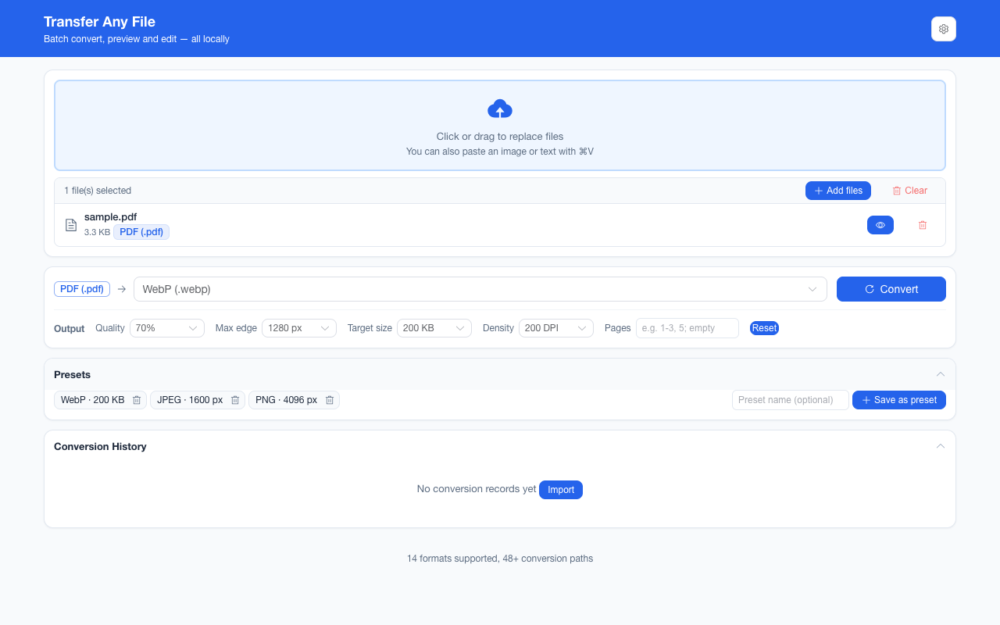

离线 · 无上传 · 浏览器本地完成Offline · no uploads · runs in the browser
GIF 转 PNG——本地取首帧无损重编码，动图会说明丢了几帧Convert GIF to PNG locally — the first frame, losslessly re-encoded, with frame loss disclosed
这条转换最常发生在"我手上只有 .gif，但我要 PNG"的场合：图标、截图、单帧素材。做法很直白——解码、把当前那一帧画到画布、无损编码。真正值得写清楚的是两件事：一是动图在这里必然只剩一帧，二是本项目只在源文件「确实」有多于一个图像块的时候才提示丢帧，静态 .gif 不会收到一句多余的警告。这个判断是走查 GIF 的块结构得出的，不是看文件名。This is the "I only have a .gif but I need a PNG" case: icons, screenshots, single-frame assets. The method is blunt — decode, paint the current frame on a canvas, encode losslessly. Two things deserve stating plainly: an animation keeps exactly one frame, and this extension warns about frame loss only when the file genuinely carries more than one image block, which it decides by walking the GIF’s own structure rather than trusting the extension. A still .gif gets no needless warning.

这条链路怎么走How the route runs
GIFGIF PNGPNG
共 1 步，由扩展的路径搜索自动选出，中间产物不落盘。1 step, chosen by the extension's own path search; intermediate results never touch the disk.
会保留什么What carries over
- 首帧的全部像素：解码后无损编码为 PNG，不再叠加有损压缩Every pixel of the first frame: decoded and encoded into PNG with no lossy pass added on top
- GIF 的透明标记：调色板里那一格"透明"在 PNG 里成为真正的 Alpha 通道，背景可以留在图上The transparency flag carried by the GIF — the palette’s transparent index becomes a real alpha channel in PNG, so the background stays off the subject
- 实际像素尺寸原样保留，只有超过浏览器画布上限（一边 8192 px）才等比缩到可承受Pixel dimensions as they are, shrinking proportionally only past the browser canvas limit (8192 px on an edge)
- 最长边与目标体积这些输出参数在终点编码生效（PNG 没有质量档，所以上限是尺寸与体积两条）Output parameters such as longest edge and target size act at the final encode (PNG has no quality dial, so the two that bite are size and bytes)
- 一批最多 200 张、单个文件 100 MB 上限，结果可一次打包成 ZIPUp to 200 images per batch with a 100 MB per-file ceiling, downloadable as one ZIP
如实说明的限制What it does not do
- 动图只剩首帧：时长、帧序、循环次数全部丢失，产物是静态位图An animation keeps its first frame only: durations, frame order and loop counts are gone, and the output is a still bitmap
- GIF 只有 256 色，源图本来就在调色板里被近似过；转 PNG 不会把丢掉的色彩找回来（无损，但不是无损"复原"）GIF carries at most 256 colours, so the source was already approximated into a palette; PNG will not win those colours back — the re-encode is lossless, not a restoration
- BMP / GIF / SVG 无法被写出：浏览器不提供这些编码器，所以 PNG → GIF 这条路在这个扩展里不存在BMP, GIF and SVG cannot be written: a browser ships no encoder for them, so there is no PNG → GIF route inside this extension
- 动 WebP 与 APNG 同样只留一帧，但本项目的"丢帧"提示目前只对 GIF 给出——判断依据是格式能可靠数出图像块，其余两种还没做度量Animated WebP and APNG inputs likewise collapse to one frame, but the frame-loss disclosure is computed for GIF alone today — that format’s image blocks can be counted reliably, and the other two have not been measured
- 解码报成功但尺寸为 0（截断文件、某些奇怪的 BMP / GIF 变体）会明确报解码失败，而不是产出一张看起来坏掉的图A decode that reports success at zero size — a truncated file, one of the odd BMP or GIF variants — fails loudly as a decode error rather than shipping a broken-looking image
实操提示Working with it
- 同一张 GIF 还能转 PDF、HTML 与 JPEG；只有 HTML 那条会把原始字节连同动画一起嵌进去，所以"要保留动"就别走图片这条路The same GIF can go to PDF, HTML or JPEG; only the HTML route embeds the original bytes with the animation intact, so if keeping motion is the goal, do not take an image route
- 如果目的是"把动图变小"而不是"要 PNG"，那这条反而适得其反：首帧可能比整个动图还大If the aim is "make this GIF smaller" rather than "I need a PNG", this route backfires: one frame can weigh more than the whole animation
- 输出参数一次设置会被记住，同一批所有图片共用The output parameters are set once, remembered, and shared by every image in the batch
常见问题Questions people actually ask
能让 PNG 也保留动画吗？Can the PNG keep the animation?
不能——APNG 不在浏览器的编码能力里。要保留动，两条路：留在 GIF（本项目 HTML → 图片以外的 GIF 不产出），或者转成 HTML 让原始字节带着动画一起嵌进去。No — APNG is outside what a browser will encode. To keep motion, either stay in GIF, or take the HTML route, which embeds the original bytes with the animation intact.
为什么我的静态 GIF 也提示丢了帧？Why did my still GIF get a frame-loss warning?
它不会——除非文件里确实有第二个图像块。提示是按走查字节结构给的，所以"文件名带 gif"不是条件；反过来，一个伪装成 .gif 的多帧文件会如实提示。It does not — unless the file really carries a second image block. The warning comes from walking the byte structure, so a .gif in the name is not the trigger, and a multi-frame file wearing a .gif name is reported truthfully.
转完为什么变大了一圈？Why did the file get bigger?
因为 GIF 用索引色加自己的压缩，PNG 用 RGBA 加另一套压缩，色深还从 8 位升到了真彩通道。对大块平色的图标两者可能差不多，对照片型内容 PNG 通常明显更大——那种情况要的是 WebP 或 JPEG，而不是 PNG。Because GIF stores indexed colour under its own compression while PNG stores RGBA under a different one, and the sample depth widens to a true-colour channel. Flat-coloured icons can land close in size; photographic content usually grows — which is the case for WebP or JPEG rather than PNG.
不需要账号，也不需要联网：装好扩展后点图标，在新标签页里打开工作台，文件从磁盘直接选。No account and no network: install the extension, click its icon, and the workbench opens in a new tab reading straight off your disk.
从 Chrome 应用商店安装Install from the Chrome Web Store 安装步骤Install steps GitHub 源码Source on GitHub